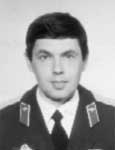

Lyndon B. Johnson Space Center
Houston, Texas 77058
|
National Aeronautics and Space Administration Lyndon B. Johnson Space Center Houston, Texas 77058 |
 |
Biographical Data |
||
YURI GEORGIEVICH SHARGIN (LIEUTENANT COLONEL)
TEST COSMONAUT OF RUSSIAN FEDERATION DEFENSE MINISTRY SPACE FORCE
PERSONAL DATA: Was born on March 20, 1960.
EDUCATION: In 1977 he entered the A. F. Mozhaysky Military Engineer Institute in Leningrad, graduating in 1982 with a certificate of mechanic engineer with aircrafts specialty. From 1991 to 1995 he graduated in absentia from the commanding department of F. E. Dzerzhinsky Military Engineer Academy.
EXPERIENCE: Following graduation, from 1982 to 1986, he served in engineering positions at the Baikonur Cosmodrome in Kazakhstan. From 1987 to 1996 he served at the Military Office of Energia Rocket Space Corporation serving as engineer and chief of group.
In May 1996, he was enrolled to cosmonauts-researchers of the Strategic Air Defense Force.
From June 1996 to March 1998, he undertook general space training and, in March 1998, he was certified as a test cosmonaut.
Since September 1998, he has served as a test cosmonaut at the Yu. Gagarin Cosmonaut Training Center (GCTC). In October 1998, he started ISS program training.
In February 2002 he was transferred to the Russian Federation Defense Ministry Space Force Commandant. In May 2002, he was attached to the cosmonaut team from the Defense Ministry Space Force and continued training for the ISS Program.
Shargin was a member of the ISS Expedition-10 crew that launched from the Baikonur Cosmodrome in Kazakhstan on October 13, 2004. The Soyuz docked with the International Space Station on October 15, 2004. Following eight days of joint operations, Shargin returned to earth with the Expedition-9 crew aboard the Soyuz-8 spacecraft on October 23, 2004.
OCTOBER 2004